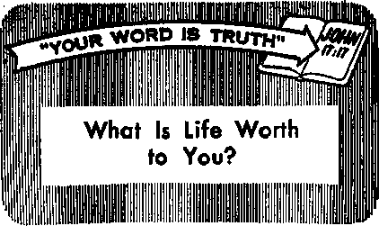

In What Do You Believe?
PA G
In What Do You Believe?
PA G
Emergency Foods
PAGE 9
A Letter Shows that You Care
PAGE IB
Meet the General Practitioner
PAGE ie
FEBRUARY 8. 1962
THE MISSION OF THIS JOURNAL
News sources that are able to keep you awake to the vital issues of our times must be unfettered by censorship ond selfish interests. "AwakeI” has no fetters, ft recognizes facts, faces facts, is free to publish facts. It Is not bound by political ambitions or obligations) it is unhampered by advertisers whose toes must not be trodden on; it is unprejudiced by traditional creeds. This Journal keeps itself free that it may speak freely to you. But it does not abuse its freedom. It maintains integrity to truth,
"AwakeI" uses the regulor news channels, but Is not dependent on them. Its own correspondents are on all continents, in scores of nations. From the four corners of the earth their uncensored, on-the-scenes reports come to you through these columns. This journal's viewpoint is not narrow, but is international. It is read in many nations, in many languages, by persons of all ages. Through its pages many fields of knowledge pass in review—government, commerce, religion, history, geography, science, social conditions, natural wonders—why, its coverage is as broad as the earth and as high as the heavens.
"Awake!" pledges itself to righteous principles, to exposing hidden foes and subtle dangers, to championing freedom for all, to comforting mourners and strengthening those disheartened by the failures of a delinquent world, reflecting sure hope for the establishment of o righteous New World.
Get acquainted with "Awake!” Keep awake by reading "Awake!"
Published Simultanbously in the United States by ths WATCHTOWER BIBLE AND TRACT SOCIETY OF NEW YORK. INC. 117 Adams Street Brooklyn 1, New York, U.S.A.
and in Enola nd by WATCH TOWER BIBLE AND TRACT SOCIETY
Watch Tower House, The Ridgeway London N.W. 7. England
N. H. Knohb, President Grant Surina, Secretary
Printing this issue: 3,ASO,000 4d
“Awaktl" !■ Ribltihid In th* tallowing 13 lininun: Srnnlsiwthly—Afrikaans, ClLrarda. Danish, Dutch, Eng-listi, Finnish, Fre&ah. Geroiaa, Oreck, Italian, Japann, Norwegian, Portuguese, Spanish, Swedish, Tagalog, Zulu. Manthly—Cebn-Vlsayan. Chinese, I!w»do, Korean, Malayalam, Polish, Tamil, Ukrainian,
Yearly sutealpllon rotes ggwa far eeralmanrhly editions
A Hario, U.S., lit Adama St.. Brooklyn 1, N.Y. SI Aaatralla, 11 Beresford Rd., Sirothflald, N.3.W. 1/-
Cnitada, ISO Bridgeland Are., Toronto IS, Ont. it England, Watch Tower House,
The Ridgeway, Loudon N;W. 7 7/-
Nsw Zsniand, 621 New North Rd., Auckland, 8.W. 1 T/-Sestk Afrlea, Private Baa. Blandsfcnteln, Tri. 70c
Monthly editions cost half the above rates.
a copy (Australia, Bd; South Africa, 3fts) Ranlttaawa far suhscripUnna shiraid be sent to the dHre In your country. Otherwise send pour remittance to London. Holies of expiration is sent at least two Issues before subscription expires.
CHANGES OF ADDRESS ihoild roach » thirty deyr before year moving dare. Glee is year eld and new addron (if pool tie, year old addles Isbell. Watch Tower. Watch Tower Hua. The Hldgcmy, Ua-dea N.W. 1, Enitaed.
Entered as second-class matter at Brooklyn, N.Y. Printed hr England
The Bible translation usd In “Awake!” b the New World Tramlwtlca ef the Holy Berlptirei, 1981 edition. When ntber tramlatlsru m tied the following symbol! will appear behind the cltntlau:
AS - American Standard Version Dy - Catholic Douar verslmi Mo - James Moffatt's rerMoo
A T - An American Translation ED - The Emphatic Diaglatt Ro — J. B. Bocberharn'c rondon
AV - Authored Version (1611) JP - Jewish Publication Hoe. RS - Berlsed Standard Version
Da - J. N. Darby's version Le - Isaac Lcecer'e wilm Yff - Robert Ytemg’s swiloo
CON
Meet the GP—the General Practitioner 16
ENTS
Second Thoughts About Complaining 23
Spanish Priest Decries
“Catholicism’s Most Important Failure” An Interfaith “King of Kings” “Your Word Is Truth”
What Is Life Worth to You?
Watching the World
“It it already the hour for you to awoke.” —Roman* 13:11
Volume XLI1I
London, England, February A, 1062
Number 8
A QUARREL is always unpleasant. It has been defined as “a breach of concord and amity/' “verbal strife followed by severed or strained relations.”
When there is a quarrel, almost invariably each side seeks to blame the other for it However, the fact is that both sides are to blame, because it takes two for a quarrel. If one is trying to start a quarrel or pick a fight, he will get nowhere and there will be no quarrel so long as the others ignore him or refuse to respond in kind. Thus the Bible tells that when Rabshakeh, the emissary of King Sennacherib, hurled insults at the Jews who were on the walls of the city of Jerusalem, they wisely, at the command of King Hezekiah, “kept silent and did not answer him a word.”—2 Ki. 18: 26-36.
Jesus enunciated this same principle when he said: "Do not resist him that is wicked; but whoever slaps you on your right cheek, turn the other also to him." Not that Jesus was here teaching pacifism or denying Christians the right to selfdefense. One has the right to defend himself from bodily harm, but he does not need to pay back blow for blow. In fact, at times Christian prudence may indicate flight when attacked. And at times it may be advisable to resort to legal redress when harmed bodily, —Matt. 5:39.
But when Jesus counseled turning the other cheek, he was inculcating the principle of avoiding quarrels by not replying or reacting in kind. A slap on the cheek, literally or figuratively, is not to be confused with a blow by the fist with the intent to harm. Rather, a slap is intended as an insult and may be for the purpose of provoking the recipient to rage so that there will be a quarrel or a fight. A Christian must ignore such provocations, or at least not play into the hands of the quarrelsome one by imitating his methods. Note a true-life incident.
A group of four Christian ministers were touring one of Europe’s leading cities In a bus filled mostly with natives of the city. Repeatedly they all left the bus to view places of interest and then returned. At one such place a native stepped up to one of the ministers and began hurling insults at him. Taken aback, the minister was at a loss as to what to make of it, but gathered that somehow or other he had unwittingly offended the hotheaded native. He took care not to answer in kind, which apparently was what the native hoped he would do so as to have an excuse to strike blows.
Instead, he apologized for any offense he may have occasioned and assured the angry one that no offense had been meant. This conciliatory attitude robbed the native of the occasion he had been seeking, and the incident came to an end.
By his course of action the Christian proved to himself the truth of the proverb that says, “An answer, when mild, turns away rage.” He also demonstrated the fact that it takes two for there to be a quarrel.—Prov. 15:1.
It is so easy for a quarrel to start among those closely associated because of living together in the same home or employed at the same office or shop. Often a quarrel results because one feels that he has been wronged, perhaps even defrauded, by another. But even such an injustice does not justify quarreling, angrily raising the voices with abusive words. There is never any justification for losing one’s temper, for “flying off the handle,” and doing so never helps matters but only adds insult to injury in the mind of the other and makes bad matters worse. If need be, legal redress may be sought, although the Bible counsels the members of a Christian congregation that it is better to be wronged than to get involved in legal cases against one another.—1 Cor. 6:7.
That was the way one of the first quarrels ever mentioned in the Bible was solved, that “between the herders of Abram’s livestock and the herders of Lot’s livestock.” Wisely Abram at once took steps to end it, saying to Lot: “Please, do not let any quarreling continue between me and you and between my herdsmen and your herdsmen, for we men are brothers.” In the interest of peace he took what was apparently a considerable financial loss, letting Lot have the best pastures.—Gen. 13:7-11.
ARTICLES IN THE NEXT ISSUE
The Peace of God Can Guard Your Heart.
The Policeman's Fight to Stay Honest* This Income-Tax Problem.
Why Antlolericaliam?
Often, merely a dogmatic statement by one is sufficient to start a quarrel because of its being challenged by another. However, instead of meeting a dogmatic statement with another dogmatic statement, would it not be wiser to remain silent? If it seems wise or necessary to make a reply, do so tactfully, in mildness, perhaps by posing an enlightening question. This may cause the dogmatic one to recede. If not, at least the situation has not been aggravated.—Ps. 39:1.
One of the greatest aids to avoiding quarrels is empathy, being able to put oneself in the other fellow’s place. By doing that we will be able to appreciate the reasoning and feelings of others and so under-standingly work for peace; we will be able to pour oil on troubled waters.
Another great aid to avoiding quarrels is self-control. In the presence of provocation hold a tight rein on your tongue, as well as your facial expression and your hands. Let principle, not passion, rule. Selfcontrol is the course of wisdom. Knowing what harm quarrels can do and how easily they can get but of hand, it is truly the course of wisdom to steer clear of quarrels. Remember, “he that is slow to anger is better than a mighty man, and he that is controlling his spirit than the one capturing a city.”—Prov. 16:32.
In turn, love and humility will help us to exercise self-control. Love helps us to make allowances for the failings of others. And humility will keep us from setting ourselves up as judges of others.
So, for the benefit of the other fellow, bystanders as well as yourself, when provocation arises, remember, it takes two for a quarrel.
TO BELIEVE

you
means to be fully persuaded of something, to put confidence in someone, to adhere to, to trust, to rely on, to give credit to a thing. For example, when we say we believe the Bible, we mean we accept it as the Word of God, that we trust its sayings and rely on it as a standard, that we are persuaded by its message to act and live accordingly.
To believe requires conviction and action, for really to believe is to obey. This is shown by the words of Jesus Christ and his followers. Jesus said: “Why, then, do you call me ‘Lord! Lord!’ but do not do the things I say?” Doing was the more important thing. Paul the apostle wrote: “With the heart one exercises faith [believes] for righteousness, but with the mouth one makes public declaration for salvation.” Here again, action is what is accented. The disciple James drives home the point that consistent actions are needed to make belief valid, saying: “You believe there is one God, do you? You are doing quite well. And yet the demons believe and shudder. But do you care to know, O empty man, that faith apart from works is inactive? . .. You see that a man is to be declared righteous by works, and not by faith alone.. . . Indeed, as the body without breath is dead, so also faith without works is dead.” So your deeds, your works, tell whether you really believe or not. They also tell in what you believe. —Luke 6:46-48; Rom. 10:10; Jas. 2:19-26.
From what you see, in what would you say men believe? Dr. Reinhold Niebuhr, a visiting professor at Harvard Divinity School, said: “The false gods are obvious. The primary one is physical power and comfort" Dean Merrill C. Tenney, of Wheaton College Graduate School, declared that “prestige, possession, power and pleasures” are the idols of today. Do you also believe in these idols? Remember that “strength belongs to God,” that “he is exalted in power,” and that only “those who are hoping in Jehovah will regain power.” Since worldly men do not hope in Jehovah, their quest to rule by might is destined to failure, because no power can long exist independent of or contrary to the greatest power of the universe, Jehovah God.—Ps. 62:11; Job 37:23; Isa. 40:31.
Recently, twenty-five United States churchmen pointed out that Americans were primarily concerned with four things: security, science, sex and self. No longer being sure of whom or what to believe or whether they should believe in anything at all, these ones are slowly bowing to “the concept of their'own self-sufficiency.” In other words, they believe in men and in the accomplishments of men. They believe that men will shape the earth into a paradise, that man’s primary concern should be himself.
Cithers state that it is good and necessary to believe in something, no matter what the contents of that belief may be. The big thing is to believe. Often such attitudes masquerade as religion, when in reality they are nothing but a strange mixture of superstition and sentimentality.
Another concept is, “It doesn’t matter what you believe, as long as it makes you feel good." This sort of thinking turns religion into a wholly subjective matter, like taste in food or furnishings, and thus robs religion of its claim to truth.
Note how accurately the Bible has predicted these moods of our day: “But know this, that in the last days critical times hard to deal with will be here. For men will be lovers of themselves, lovers of money, self-assuming, . . . lovers of pleasures rather than lovers of God, having a form of godly devotion but proving false to its power; and from these turn away.” If these are some of the things you believe in, the inspired advice is to turn away from them, because they hold out no hope, no future.—2 Tim. 3:1-5.
The Love of Money
A good many people today will openly admit that they believe in nothing but money. They work themselves to death to acquire a fortune, believing that it will solve their many problems’, only to find that they have accumulated more miseries as a result of their greater wealth.
Pecunia, meaning money, was worshiped as a goddess both in Greece and Rome. They also worshiped the god Aesculanus (brass) and his son Argentina (silver), that their coins might be plentiful. Augustine said: “I wonder if Aurinus was not made a god after Argentinus, because silver money was followed by gold.” These gods are said to have been more extensively worshiped than all others, and we might add that the worship of them is more active now than at any other period in human history. To acquire their favor men sacrifice time, energy, talents, labor and even life itself, and obtain little happiness In return. The Greek writer Menander stated: “If you have those gods, gold and silver, at home, ask whatever you please, you shall have it. The very gods themselves will be at your service.”
Yet what is working for wealth but a “striving after wind"? as King Solomon said. If you are inclined to believe in riches, listen to the wise proverb: “The one trusting in his riches—he himself will fall” “For the love of money is a root of all sorts of injurious things, and by reaching out for this love some have been led astray from the faith and have stabbed themselves all over with many pains. However, you, O man of God, flee from these things. But pursue righteousness, godly devotion, faith, love, endurance, mildness of temper. Fight the fine fight of the faith, get a firm hold on the everlasting life for which you were called.” So there are, by far, greater and more important things than wealth. Do you believe this? Does your life show that you do?—Ecd. 2:11; Prov. 11:28; 1 Tim. 6:10-12.
In What Does Youth Believe?
About five years ago a book was published setting forth the religious and ethical concepts of more than eight hundred young people between sixteen and twenty-three years of age. It is shown by this study, says the author of What They Believe, G. Edwin Covington, that the trend of faith among modem youth moves away from fear of a distant hell “toward enlightened humanism. Man’s social responsibility is equivalent to a duty to God; a life well lived is ample reward for living."
It was found that God is still somewhat of a mystery to the average student believer. When students were asked whether they believed God and man were alike in form 56.5 percent of 844 students stated that they thought there was some likeness. They believed that man in some way resembled God. Yet they could not state why tb~y so believed. Jesus told men that “God is a Spirit.” Therefore, in our physical form we have no reason to believe we resemble God. However, the Bible does say that man was made in God’s image and likeness. This means that we are like God in that we were given dominion over lower creation of the earth to have them in subjection as God does his universe. We may also be said to be like God in that we possess Godlike qualities of wisdom, justice, love and power. We can express compassion, mercy and forgiveness, and we have the capacity of intelligence. In these respects we can say that we in an infinitesimal way resemble God, but not in form.—John 4:24; Gen. 1:26, 27.
More than 84 percent of 775 students expressed their belief that there is a Creator of all things, which shows that those in the group are far from becoming infidels. When 698 of these same students responded to the question, Is Christ God? it became clear that many were taking the word of their church as the basis for belief, even though they did not clearly understand what was being taught. Over 87 percent affirmed that Christ is God. Yet when asked if they believed that Jesus lived in heaven with God before his human birth, there were 775 replies, and of this number 33.6 percent affirmed. When asked if Jesus went back to heaven after his resurrection, there were 82.2 percent who en-swered affirmatively. These figures show that some of the students cither did not understand the questions or they did not have a clear understanding of what they believed about Christ and God. Covington stated that their replies indicate “that modem youth is rapidly falling away from the traditional doctrine of the Trinity so long taught by church leaders and Christian fathers."
Perhaps the most reassuring finding in connection with this study is that 85.8 percent of those who responded preferred the Bible over all other books in the world of their knowledge. Even though many had only a superficial knowledge of the Bible, found it confusing or difficult to understand, still it was the Book of their choice.
Fifty percent of 716 students believed there is a material hell that bums with fire and brimstone. The rest said “no," or they were uncertain. The large percentage of negative replies was viewed as an indication of a departure from the traditional belief in a physical hell. Fear of hell-fire no longer is a deterring force in the lives of many young people.
Do you believe in hell-fire, a place where souls are tormented for all eternity? Actually, there is no sound reason why you should, because there is no such place. The Bible plainly says: The dead “are conscious of nothing at all.” If they are not conscious, then they cannot be suffering torments. The Bible hell is simply the silent abode of the dead, mankind’s common grave. This you can believe, because file Bible teaches it.—Eccl. 9:5,10; Rev. 20:14.
As for the reward of everlasting life, 81.6 percent of the students questioned believed there was a reward for the righteous, They believed that that reward was with God in heaven. There was no comment made, however, on Jesus’ words that the meek would inherit the earth or about the words of the psalmist who said: "The righteous themselves will possess the earth, and they will reside forever upon it.” (Ps. 37:29) If we believe these promises, then we must conclude that not all men will be rewarded with life in heaven, but that some will live everlastingly right here on earth. Do you believe that? You should, if you believe what the Bible teaches.
In Whom and What to Believe and Why
It is important to know, not only what we believe, but also whom we believe and why. The apostle Paul declared firmly: “I know the one whom I have believed.” To his shipmates, he said:‘“Be of good cheer, men; for I believe God.” The disciples of Jesus believed “the Scripture and the saying that Jesus said.” They also believed him to be the Messiah with sayings of everlasting life. Simon Peter confessed to Jesus: “You have sayings of everlasting life; and we have believed and come to know that you are the Holy One of God.” Do you believe that? Does your life show that ■ you do? Jesus said: “He that believes has everlasting life.” So it is to your everlasting welfare that you do believe.—2 Tim. 1:12; Acts 27:25; John 2:22; 6:68, 69, 47.
Raising the dead to life seems a thing often too hard for men to believe. Paul asked the court before which he was being tried: “Why is it judged unbelievable among you men that God raises up the deEid?” These men found the doctrine of the resurrection hard to believe. On one occasion Jesus told Martha: “I am the resurrection and the life. He that exercises faith in me, even though he dies, will come to life; and everyone that is living and exercises faith in me will never die at all. Do you believe this?" Martha replied: “Yes, Lord; I have believed that you are the Christ the Son of God." Not to believe is to incur injury to yourself for resisting what is absolutely true. 'If in this life only we have hoped in Christ, we are of all men most to be pitied,” said Paul. So we believe in Christ and in his power to raise the dead.—Acts 26:8; John 11:25-27; 1 Cor. 15:19.
If we truly believe in Christ and in his marvelous powers, we will make these facts known. We will tell others about them. Such conviction will become a force in our lives. Paul wrote: Christ “died for all that those who live might live no longer for themselves, but for him who died for them and was raised up.” Others will know of our convictions, of what we believe. For one who believes rejoices with the truth. Such one is optimistic. On the other hand, one who does not believe is torn apart. For without faith there can be no peace of mind, no lasting satisfaction in life, no hope for the future. There can be nothing left but a hopeless feeling of despair. —2 Cor. 5:15; Ps. 49:20.
So we believe, not in power, prestige or pleasure, not in science, sex, money or self, but in the everlasting truths of God's Word, in God’s kingdom, in the good news about the Christ. For “it is, in fact, God’s power for salvation to everyone having faith," for everyone who truly believes. —Rom. 1:16.
Thinking the Unthinkable
"The unthinkables are no longer unthinkable. Only yesterday leading statesmen warned that force as a means of settling disputes in an atomic age was unthinkable. They made it emphatic that the moment nations turned to nuclear war in pursuit of their objectives they destroyed both the objectives and one another. A single nuclear-tipped missile could carry a special delivery death message for a million people or more. No defense, however ingenious, could be adequate. Hence the clear warning that recourse to war in today’s world was in the nature of a suicide pact.
"Now, however, a specific test arises and the unthinkables threaten to become the possibles.”—From warning placed in the New York Times, July 20, 1961, by the National Committee for a Sane Nuclear Policy, Inc., occasioned by the Berlin crisis.

IN OUR modem civilization the problem of getting food from day to day is not as great as it is for people living in primitive conditions. Instead of spending the greater part of every day roaming about a wilderness looking for something to eat, you spend it at some form of employment that may have no connection with food production. With the money you earn you can go to a nearby food market and buy what you need. But what would you do if you should find yourself in a situation where there were no food markets?
It is not uncommon for people to become stranded in a wilderness, far from food stores. Cars break down in desolate places, airplanes crash or are forced down, unexpected floods or heavy snows isolate campers, hikers get lost, ships sink and survivors sometimes have to wait for rescue on an unpopulated island, and so on.
A number of things can happen to travelers that can put them in a situation where their survival depends upon their ability to find food. Are you so accustomed to convenient markets that you would starve if stranded in a wilderness?

Limited Diet
Chances are that the foods you eat from
day to day are rather limited In variety. You probably eat the same few basic things and seek variety by preparing them in different ways, seldom if ever trying an entirely new food. This limitation of your diet may cripple your imagination when you must find something to eat in wild country. You could very well starve to
death with food all around you, because you looked only for the things that are customarily eaten in your community.
People living in many countries different from yours eat things that are very likely never on your dinner table. You may not even consider as food the things they .eat, yet they find them nourishing. Octopus, for example, is relished by people in many lands, but in some countries comparatively few people eat it. The same is true with snails. They are a delicacy in some places, but in others they are shunned. People unaccustomed to eating snails would probably starve with an abundance of snails within
easy reach because they fail to realize that
these little creatures can serve as food.
In countries of North Africa and the Near East where migratory grasshoppers, known as locusts, abound, this troublesome insect is regarded as a tasty tidbit. The people of a village in southern Tunisia dried and sacked three thousand tons of them during a locust invasion in 1956. By grinding and salting dried locusts a food reserve
can be provided that

Whether dried, fried or roasted, locusts are very nourishing, minus their wings and legs, of course;
The Holy Bible relates how John the Baptist ate locusts and wild honey while living in the desert, and he apparently fared very well on this diet. Contrary to the opinion of persons who dislike the thought of eating grasshoppers, John did not eat the pods of the carob or locust tree. He ate insect locusts. This is made clear in the New World Translation of the Hbly Scriptures at Matthew 3:4: “But this very John had his clothing of camel’s hair and a leather girdle around his loins; his food too was insect locusts and wild honey.” In-sett locust was listed by the law of God as a permissible food. You can find this at Leviticus 11:21,22.
Insects Can Save Your Life
Your survival in a wilderness requires you to realize that there are foods there that can keep you alive, although they may be very foreign to your customary diet. If they can provide nourishing sustenance for people of other lands, they can do the same for you. They can save you from starvation. Insects, for example, are a high-quality protein food, and protein is what hungry people need.
A common insect you most likely would overlook in a search for food is eaten by people in various parts of the world, especially in tropical Africa. This is the lowly termite or white ant. It is among the richest of all foods in terms of calories. A Belgian analyst found that there were 561 calories for every 100 grams of this insect.
Ordinary ants are fried and canned by the Japanese, who export them to gourmets throughout the world. Although you may have no intention of becoming a gourmet, ants can help you stay alive in a wilderness. When digging up a nest of ants do not ignore the pupae, larvae and eggs. These too are nourishing.
If there are bees where you are stranded, you have another source of food. Besides the delicious honey that hard-working bees manufacture, the bees themselves are highly nutritious, especially baby bees. When prepared for food they resemble breakfast cereal and are reported to have a pleasant, distinctive flavor. Baby bees contain ten times as much vitamin D as cod-liver oil. Like ants, bee larvae and pupae are also nutritious. The larva contains 4 percent fat and 16 percent protein, whereas the pupa has 2.5 percent fat and 18 percent protein. Both contain twice as much vitamin A as egg yolk. The pupa of the silkworm is also nourishing food.
Laboratory studies have shown that silkworm pupae as well as white grubs are satisfactory sources of needed protein. During World War I an entomologist experimented with a stew of white grubs as a food source. The volunteers who tasted it said that the stew was quite appetizing. If the Australian aborigine can include worms in his diet without bad results, you can too if your life is at stake. You may have to adjust your thinking, but that is better than starving to death.
In a forest there are many rotten logs where plump wood grubs can be found. These can be cooked into a stew, using a basin hollowed out of a log. Hot stones dropped into the basin can do the cooking. Because of the valuable protein that grubs provide, starving prisoners in a brutal concentration camp can help keep alive by eating the worms that may be in the food served them. ,
The long, fat shipworm that burrows into submerged timbers in tropical waters Is relished by many people. It is not really a worm, although it resembles one. Its relationship is to the oyster and the clam. Some natives in Thailand plant pieces of soft wood at the mouths of streams so shipworms, or teredos as they are sometimes called, can bore into them. After a time they raise the wood and eat the fully grown teredos. If you should be stranded in tropical regions where teredos live, you have another source of food.
Animals and Birds
Wherever you may be stranded there are usually many small creatures that can be hunted and eaten. Almost all small animals and birds are edible. In fact, any fur-bearing animal, including monkeys, can be used for food. Your problem, however, will be to catch them. The best time for this is usually at dusk or early morning. Well-placed snares can catch rabbits, squirrels, ground squirrels, beaver, muskrat, and so forth. All can be eaten if there are no signs of disease on them. Birds can be snared during the day or caught after dark while they are roosting. Of course, drain them of their blood. Do not overlook their eggs, as these too make good emergency food.
If you enjoy eating eels, you should have no difficulty in downing a meal of snake flesh. Snakes are edible, whether of the poisonous variety or not. But be careful of the poisonous fangs when you remove a snake’s head. Also be alert for frogs. Their tasty legs can be added to your menu as well as the hindquarters of lizards.
The bleeding, skinning and cleaning of small creatures should be done at once, being careful not to puncture the bladder or Intestines, as that will spoil the meat. Thoroughly cook the meat, especially if you have reasons to suspect the presence of trichinosis. The best way to do this is to cut it into small pieces before you cook it.
In the event you succeed in snaring a large animal such as a deer, you should bleed and skin it promptly. Excess meat can be preserved for future meals by smoking it. This can be done by erecting a tepee of saplings covered with boughs if no cloth is available. After hanging strips of meat in it build a smudge fire of green wood, allowing the meat to smoke for several hours. It will then keep for a week or more.
Possibly fish will be one of the first foods you will seek if you are stranded near water. Fishhooks can be made from almost anything that will hold its shape under pressure and that can be sharpened. Even a small bone can be used after being carved into proper shape. Nets can be fashioned from a handkerchief, a shirt, or even a pair of trousers by tying the legs. These makeshift nets can be used to catch minnows in a pond after you have scuffed up the mud in the bottom so they cannot see you approach them. The same method can be used for catching larger fish. Saltwater fish can be eaten raw, if necessary, but avoid eating raw fresh-water fish, as they may contain tapeworms. We might also mention that the blue or black mussel should not be eaten, as it may contain a poison that is as deadly as strychnine.
Plants
The stranded traveler cannot expect to find the same fruits, grains and vegetables he customarily eats, but there are many substitutes to be found in wild plant life. The big question is, What can be eaten? The answer can be found by watching what the birds and animals eat. Usually what they eat you can eat. If you are in doubt as to whether something is poisonous or not, chew a little bit and hold it in your mouth. When there is a burning, nauseating or bitter taste spit it out. A poisonous plant tasted in this manner is not likely to be deadly to you.
As a general rule, in the North Temperate Zone the flowers of practically all plants are edible. Housewives might be interested to know that the flowers and the entire plants above ground of nasturtiums are excellent for food. Attractive salads can be made by decorating them with colorful nasturtium blooms.
Since no grass is known to be poisonous, all of them can be used for food. Wild grasses have lots of seeds that can be shaken into a spread-out shirt or cloth. After rubbing the seeds between your hands to remove the chaff, you can prepare them for eating by either boiling or roasting them.
If you see cattails, add them to your menu. The soft core of the stalk, the young shoots and the rootstalks can be boiled or eaten raw. The same can be said of water lilies. The rootstalks can be eaten, raw or boiled; the tender stems can be chopped into a stew, and the seedpods, although a little bitter, can be dried and made into a flour.
Where there are ferns, these too can serve as food. None are poisonous. The fiddleheads at the top of the ferns are a nourishing substitute for asparagus or cabbage. You may find the hairs a little bitter, but these can be removed by rubbing the fem under water.
Do not pass by the algae that grow on the top of ponds. Although this plant appears rather unappetizing, it is very nutritious. The magazine Science News Letter estimated that a tablespoon of algae equals the nutritional value of one ounce of steak. While its taste may be a little unpleasant to you, it can be improved by an exposure to an overdose of light. This tends to bleach it somewhat and make it more palatable. You may see mushrooms, but it is usually safer to pass them by. They have very little food value, and some varieties are poisonous.
Where there are trees, you can find food in their nuts as well as their bark. The inner bark of such trees as aspen, spruce, willow and birch can be eaten. It has been found that the inner bark of the pine tree is especially rich in vitamin C. After scraping away the coarse outer bark the soft inner bark can be eaten raw, dried and cooked. Thin, green outer barks and white inner ones are the best to eat.
Water Supply
In almost any wilderness food is abundant if you know how to find it, but there is another physical necessity that is vital for your survival and that is water. Finding it may require you to dig in the gravel bottom of a dry stream or in the sand of a seashore. When there is a low forested area along a seashore, fresh water will often rise in a scooped-out hole in the sand if the sea is at low tide. Rainwater caught in rocks or stumps is usable. The growing tips of plants, leaves and roots contain considerable water as well as the roots of trees in hollows between ridges. The barrel cactus is famous for its ability to store water. So water can be found if you know where to look.
Supplying yourself in a wilderness with food, water, shelter and utensils is a task that can require your full time. To exist there is not easy. It is far different from a city where the necessities of life can be obtained from stores with little effort. Your survival in a wilderness will depend upon your ability to use your ingenuity and your willingness to use emergency foods.


HOW often does your mailbox disappoint you by having nothing more than dry advertisements and unwanted bills? The hopeful anticipation you build up as you approach it is deflated like a punctured balloon when that is all you find. But what a difference when you open the box and find there a letter from a

Every day you associate with people and they are a constant source of interest. When you go to the market or go to business, look for interesting things people may do or say. Sometimes you see a very comical or unusual sight that would be very interesting to relate in a letter. Make a note of it as a reminder. Do not dismiss it from your mind as too commonplace. The same is true of things done and said by your own or other children. Some of their antics and remarks are really gems for letter writing. Take note of them. Remember that what may seem commonplace to you may be intensely interesting to a friend living in a distant town or country.
friend or loving relative! You eagerly tear it open and avidly read it, not once, but possibly two or three times. This joy you have at receiving a personal letter is also had by persons who receive letters from you.
It is selfish to expect letter writing to be a one-way proposition, with you receiving them but seldom if ever sending them. Your letters to friends and relatives show that you are interested in them, that you care about their welfare and about what they are doing. They show that you think about them. A letter from you means that you think enough of them that you are willing to take the time to write them. "But I have nothing to write about,” you may say. Nonsense! There is plenty about which you can write. All you have to do is be observant.
Your hobbies, your activities, your plans, your vacation trips, the things you learn from talking to other people and from reading various publications, the experiences you have in religious activities, the impressions you have of good music heard or a movie you saw all provide material for letter writing. There are countless things you can tell a friend when you write if you are looking for them. By being observant and by taking notes you will not find yourself stuck after writing the first paragraph of a letter. You will have no reason for saying, “I have nothing to write about.” You will have something to say, and when you say it, make it interesting.
Interesting Letters
Avoid colorless and trite phrases such as: “I am well and hope you are too.” "The Weather is fine.” "Had an interesting trip and arrived home safely.” "Having a fine vacation. Wish you were here.” "There is no news. Everything is the same.” Letters like that are lifeless. They are too vague. If you do not enjoy receiving letters with Stich phrases, why use them yourself? “But how else should I write?” you may ask. For one thing, put yourself into your letters.
Write as you talk, using the same colloquial expressions you customarily use. Give more than just cold facts. Express your feelings, your thoughts, your joys. Reveal your enthusiasm In the same expressive way you do when speaking. Let your letter radiate the same warmth you have when you are in the company of close friends. By putting yourself into your letter, it will reflect your personality, and the reader will get much more enjoyment from what you write.
Another way to make a letter interesting is to use quoted' dialogue. Instead of merely relating something that happened, write portions of the conversation. For example, if you were relating to a friend an incident that took place when you visited some local acquaintances you might write it In this fashion:
After dinner I suggested to Mary that she play something on the piano.
"Oh, no, Ann,” she said. "I haven’t touched it in years.”
"Please do,” I urged her. ‘We would like so very much to hear you play something.”
Everyone else joined in urging her to play. Finally she consented, warning us that she was out of practice. In expectation we waited as she opened a piece of music and got ready to play it. When she struck the first few keys we were surprised at the sound that came out. Something was wrong! Bill walked over to the piano, raised the cover and looked in. Then he turned to us with a sheepish grin and said: "Moths have eaten the felt off the keys.”
Using dialogue in this manner, you give your letters a spark of life that injects realism. It makes them interesting and different, Write the dialogue as people speak, using short sentences and contractions. Do not overdo the use of dialogue, however.
A letter becomes wearisome when you go on page after page relating meaningless details of a conversation. Condense the conversation so you get to the point quickly. This prevents the letter from getting bogged down in dull details. Be conscious of this and you will show consideration for the one who reads what you write. Consideration is also shown in how you open and close your letters.
Beginning and Closing a Letter
The beginning of your letter should not be a trite one such as "As I take my pen in hand ...” or “I received your last letter,” and so forth. Inject feeling and meaning into the introduction. Consider as a good example the letter the apostle Paul wrote to the Christians at Colossae. After his salutation he said: "We thank God the Father of our Lord Jesus Christ always when we pray for you, since we heard of your faith in connection with Christ Jesus and the love you have for al] the holy ones.” (Col. 1:3, 4) Paul was concerned with the spiritual welfare of those people, and at the very beginning of his letter he expressed his interest in them, and he expressed his feelings. Look at the other letters Paul wrote, and you will see that he always used meaningful beginnings. They fitted the subject matter of his letters. You can do the same, developing your own style.
If the person you are writing has done something for you or has sent you something, you can begin with an expression of appreciation. Let the person know how you feel about it. Another letter could begin by referring to something that the person said In a previous letter, or you might make an expression of concern over the person’s health if it has not been good. There are many ways you can begin a letter In ah interesting manner. The same enn be said about the closing of your letter.
Meaningful conclusions*to letters are as desirable as meaningful beginnings. Closing a letter by saying, “I have reached the end of the paper, so I will dose now,” is the same as saying, “I am too lazy to take another sheet of paper out of the desk drawer to write you something more.” Or if you say, “I must close now because I have cleaning to do,” it means that you do not consider your friend important enough to pdstpone your cleaning until you have finished writing the letter. It is best not to tack on such pointless remarks. Give more thought to your conclusions.
Avoid the hackneyed phrases such as: “I hope . .,“I trust. . .,” "Hoping you Will stay well. . .,” “Thanking you in advance . . .,” "Trusting you will answer soon . . .,” and so on. Think up original expressions. In keeping with the type of letter the apostle Paul was writing to the Ephesians, he concluded by saying: “May the undeserved kindness be With all those loving our Lord Jesus Christ in incorruptness.” (Eph. 6:24) Think of a closing that would be in keeping With the subject material of your letter.
Perhaps you are keeping your friend informed on the progress of a personal problem. You might conclude by giving assurance that you will inform him of What develops. Or you may make a promise to write about something else, something you plan on doing. Such conclusions give yoilr friend further reasons for anticipating your next letter. Letter writing Is not difficult if you are observant of the things that happen around you from day to day and if you express yourself freely and warmly as you do every day. The paper becomes a barrier when you withhold your feelings, your thoughts and opinions of things. These warm, personal expressions are appreciated by the ones who receive your letters.
You may be very busy with many responsibilities that prevent you from writing as many letters as you would like, but do not permit that to curtail your letter writing altogether. Take the time occasionally to let your friends know that you are thinking about them. It helps to perpetuate friendships. An encouraging letter from you to a friend in a foreign laud means ever so much to that friend. The good It does is worth every bit of the time and effort it takes on your part to write. The same can be said about children who are away from home. Their letters to their parents are appreciated more than they may realize. Be quick to send a note of condolence when there is a death in a family of your friends or a note of sympathy to someone who is sick. These are thoughtful gestures that help to strengthen a person in times of trouble.
Remember that the pleasure you have in receiving letters is also experienced by those who receive letters from you. Keep in touch with friends and loving relatives by sending them letters. Show by letter writing that you care.

THIS is the age of specialists. Specialists are to the fore in every profession. Of none is this more true than the medical profession. There are back, bone, brain, heart, nerve and stomach specialists; specialists for children under twelve, for womenfolk and for the old folk, to mention but a few. The situation calls to mind ancient Greece, where each physician treated only one disease.
True, specialists are valuable; some may be considered essential to the healing profession. But the modem patient keeps demanding the services of a specialist for every ailment, even though not 20 percent of them require a specialist. This demand is influencing the choice of the medical student, for the specialist has a higher status and can charge more for his services than can the nonspecialist.
All this undue emphasis on the specialist has resulted in an unfortunate downgrading of the converse of the specialist, the general practitioner, known in the medical profession as simply the GP.* Although, as the family doctor who is concerned with the human as a whole, he is the mainstay of the medical profession, his
• There are many viewpoints on the treatment o£ disease. Awake! does not champion any of them as infallible, but the facts it presents about the various schools of thought are designed to enable you to make an Intelligent personal choice in the matter. Both medical research and social conditions bring about constant changes. It is to your advantage to be awake to the situation as It affects your life.
General Practitioner
numbers are rapidly diminishing, especially in the United States.
While the GP is defined as a physician “who does not limit his practice
to a speciality,” actually, as stated in The Practitioner, “a good general practitioner is the greatest specialist of all. He must not only be expert in all the diseases that harry his fellowmen; but he must also be learned in the foibles [the weaknesses and failings] of the people. Only with this kind of knowledge can he properly handle the many that seek his advice and care.”
The GP differs from the specialist in two basic respects. First he must be ready to deal with any complaint that any patient may present to him, and that regardless of social conditions. Secondly, he has the responsibility of the continued personal care of his patients.
Of course, this does not mean that the GP must personally and exclusively treat every patient that comes to him. He may think it advisable to call in a specialist for consultation. This he usually is glad to do for more than one reason: It may assure the patient better treatment; the GP himself may learn from the specialist, and it protects him in the event that things go badly. The GP may therefore be said to serve as a clearinghouse for his professional brothers, the specialists—a role, incidentally, also taken by the internist, as diagnostician.
Motives and Rewards
What motivates a young man’s choice to become a GP? Considerations as varied as the individuals themselves. While among the main considerations may be status and financial security, there also invariably is, to a greater or lesser extent, the altruistic desire to help one’s fellowman. A common example of this is the medical missionary.
It is altruism such as this that caused Albert Schweitzer to devote his life to ministering to the African natives and Dr. Larry Mellon and his wife to minister to the Haitian natives.
As for his rewards, the average medical student can certainly expect to realize most of his goals, at least in the United States, Many a good GP there earns, on an average, $2,000 to $3,000 a month.1 At the same time he has the emotional rewards, the deep satisfactions of his moral nature that come from continually being able to work with people and help them, relieving them of their ills, or at least endeavoring to do so. And these higher rewards, as any good and successful GP will tell you, are more rewarding by far than his financial gain, good though it may be.
What Does It Take?
What does it take to be a good GP, so as to reap such fine rewards? Much in every way. First of all, it takes determination, stick-to-itiveness and money. It means sticking to a course of learning and training that takes a minimum of twenty-one years: eight years in grade school, four years in high school, four years in college, four years in medical school and one year, at least, of internship in a good hospital. The four years at medical college cost the student, or his parents, some $12,1 000 and during his internship he earns but a nominal sum; in a New York City city hospital, $2,300 and his board and room, as of July, 1961. Had he chosen to be, say, an engineer, he might have been earning upward of $10,000 a year for those five years instead of paying out $12,000 more for his education. So being a GP cost him, first of all, some $60,000 extra.
Next to a good education, to be a good GP takes warmth and understanding, a love of people. It has therefore well been said that there are three kinds of GP: There is the kind that is primarily interested in material rewards, the kind that does not take his patients’ ills seriously. It seems that their number is increasing, as noted by the complaint of a doctor’s wife in the article “Are Doctors Status Seekers?” which appeared in a recent Sunday news supplement. Also, there are the GPs who get their chief enjoyment out of the intellectual challenge that medical science presents and who would feel more at home in the research laboratory. And then there are the born GPs, those who love people, who like, above all else, to help people, while also loving medicine, and for whom being a GP is a most rewarding profession.
To be a good GP also takes conscientious thoroughness—a quality far more important than mental brilliance. In making his diagnosis he must be willing to take time, have patience, be alert and observing, and obtain a complete case history. He must properly weigh whether he should give medication by injection or orally, or merely prescribe vitamins or diet. He must use good judgment in his minor surgery, perhaps making a few stitches, lancing a boil or removing a pair of diseased tonsils. And he must also be able to detect to what extent an illness is psychosomatic and just how to go about curing it.
The good GP must also be ingenious, resourceful. He must be able to make the best of circumstances so as to give the patient the best possible care at all times. In an emergency he must be able to improvise Whatever instrument or equipment is not available at the time.
The good GP is not at all reluctant to make necessary house calls and puts his patients’ welfare ahead of his own convenience. He appreciates that there are advantages In making house calls; to see a patient’s home environment may help in determining the cause of his Illness—for example, whether It could be psychosomatic.
It also takes long hours to be a good GP. Some persons may be prone to judge by the office hours of the GP. But what about his hospital calls, his house calls, his study of medical journals and his attending lectures at the hospital? One GP who kept a record of his hours over a period of time found that at the prevailing union scale he would have earned more money as a bricklayer or a plumber! Many a GP begins work at eight in the morning and is busy until late at night, at times working as much as ninety hours in a week. In one day he may see fifty patients or more, at the hospital, at his office and in house calls.
In view of all the foregoing, the following lines by an appreciative patient are most apropos:
“That grand old Doctor, drove o’er hill and dale,
And lost much sleep In keeping people hale. Strict duty was his motto, day and night.
In his fine code, wrong never passed
for right
He had love and compassion for the poor, And ne’er was known to turn one from his door."
Temptations and Problems
The GP, being human and imperfect, also has his share of temptations. Should he accept a fee from a young aspiring surgeon for recommending him to his pa* tients, or give a second-rate surgeon Work for the sake of a fee? The GP may have gotten a little rusty in his surgery and M may not want to take out a pair of diseased tonsils himself. But he does not want his patient to know this and so he lets another, a "ghost,” do the surgery without the patient knowing it. Unethical? Yes, but not uncommon.
A patient may ask his GP to falsify an Insurance record so that the patient can collect money not actually due him. If the GP refuses, he may offend and lose his patient; if he complies, he labors with a guilty conscience and may get into legal trouble. But the severest temptation of all that the GP has to guard against in these times, according to one veteran GP, is that presented by unprincipled persons of the opposite sex, colleagues, nurses, clerical help and patients who more or less subtly hint at sex relations.
Among the major problems facing the GP today is that of keeping up with modem medicine, finding time to read professional journals, knowing what is latest and best in procedures and in medicine. A big help in this regard is the biweekly pamphlet The Medical Letter, which fearlessly reports on the findings of impartial research on the claims of drug houses. Helping to serve a somewhat similar purpose as to progress of medicine in general is the concise weekly Medical World News. Hospital lectures can also prove a means of saving time in keeping up with medical progress.
Another problem facing the GP Is that of loyalty. An article entitled "Bad Doctors” told of some five million Americans being treated by dishonest and unqualified practitioners, the authority for which statement is none other than the American Medical Association. If called to testify in a malpractice suit, will the GP testify against a colleague whom he knows to have made a serious blunder, or will he refuse so as to remain a "good fellow”?
Then there Is the matter of socialized medicine. What should be the attitude of the GP toward it? Is it inevitable, as many claim? It does prevail in a number of leading countries of the world. Should he work against this trend or be sympathetic toward it? Medical organizations are bitterly fighting to keep their fee privileges. Doctors are a fiercely independent group, but who would not like to be free from economic regulation? And yet, how few are!
There is yet another problem facing the GP that should be mentioned and that is his attitude toward those not recognized by his particular school of medicine. Should he, as an MD, refer a patient to a certain osteopath or a chiropractor, If he has reason to believe that a particular case calls for their type of therapy? In view of the fact that certain medical societies in the United States, comprised of MDs, now recognize osteopaths, just how much justification is there for keeping a "medical curtain” between the two schools of medicipe?
And what about the homeopaths? Should he treat them as a medical sect or take the attitude of Professor E. Behring, discoverer of tetanus antitoxin, who quoted with approval the statement of one of Germany’s great physiologists: “Gentlemen: If I had set about myself the task of rendering an Incurable disease curable by artificial means, and should find that only the road of Homeopathy led to my goal, I assure you dogmatic cohsiderations would never deter ipe from taking that road.”
Being Fair with the GP
“Most patients like their doctors,” reports a United States Public Health survey. Yet, inconsistently, many a patient Is prone to be unfair with his GP. When he is sick he prays to God and summons the GP. But no sooner is he well again than he promptly forgets about God and neglects to pay his GP.
Yes, being fair with the GP means to pay him as soon as we can. A GP is usually patient with people in straitened circumstances, but it is not easy for him to be patient with those who allow themselves all manner of luxuries and yet neglect their medical bills. Why are people prone to act in this way? Because the imperfect human likes to get away with all he can. He knows that if he does not keep up the payments on the piano, auto or wide-screen television set, the dealer will repossess It. But the GP cannot repossess the baby he helped deliver or the other medical services he may have rendered. And there ate persons who are extremely careful to keep up their insurance payments so that they mighl have a “decent’’’ funeral, and yet neglect to pay their GP who helps them to enjoy a decent life.
Cooperating with his efforts to help us is also included in being fair with our GP. When he takes our medical history we should not only answer all questions and answer them honestly but should volunteer information that might be germane. If we cannot trust him to keep professional secrets, we should get another GP whom we can trust. If to reduce weight or for some other sound reason he prescribes a diet, we owe it to him to stay on that diet; failure to do so is not being fair to him. Neither is it being fair to him to expect him to clear up a lung or throat condition while we keep on smoking cigarettes against his instructions, or to blame him for pains we suffer due to our own indiscretions.
We also want to be fair with our GP in the matter of house calls. We should not expect him to put himself out more than we are willing to put ourselves out for our own benefit. Inclement weather in itself is no valid reason to ask him to make a house call; yet as soon as inclement weather comes requests for house calls mount greatly. If it is merely a matter of his convenience against ours, let us reflect that we have only to go out once in inclement weather, while he has ever so many calls to make in it.
The Future
What is the outlook for the GP? Will he disappear and will that be a good thing? The public keeps clamoring for specialists in spite of the fact, as noted in GP, that “for more than eighty percent of the conditions we do not need high-powered, high-priced, super-specialists, but men with warmth and understanding.” As a result there is already a serious shortage of GPs in the United States; of its 150,000 practicing physicians (in 1959), 82,000 are GPs. In 1931 there were 112,000, a decrease of more than 25 percent in some thirty years, whereas the population increased some 50 percent, from 122 to 179 million.2
Because of the popular clamor for specialists, the GP actually is absent from some hospital staffs. Where there is but one physician in a community, it is the GP. But where they band together to form a community medical center, there may be but one GP on a staff of ten; the rest being internists, pediatricians, gynecologists, and suchlike. Making a bad matter worse is the all too common attitude of the medical student to choose a specialty instead of a GP career. Years ago a man first proved his worth as a good GP before he channeled his skills into a specialty. As a result, not only were there more GPs, but the specialists had a good grasp of the practice of medicine as a whole.
Those most directly involved, government health services, medical institutions of learning, medical editors and medical associations, view the vanishing of the GP with alarm. On this subject the United States Secretary of Health, Education and Welfare stated: “The ‘family doctor’ is a vanishing breed. Is this necessary and desirable? . . . How far can we, or should we, go down the road toward fractionization of the patient—toward making him a heart, ... a set of bones? Can we somehow preserve the values of the old ways, of the personal family doctor?" And the president of the American Academy of General Practice, representing some 70,000 GPs, says: “The biggest problem facing American medicine is not nationalization ... it is the perpetuation of the profession as a virile . . . force in the American community.”
Recently a cartoon showed a specialist telling his patient that he and his fellow specialists would like to have permission to call in for consultation a GP. That may yet prove to be the case!
Treating an Elephant's Cold
“An elephant is very sensitive to cold," relates Dr. George Goodwin of the Department of Mammals of the American Museum of Natural History, “though his hide is a good inch thick.” He explains further in The Animal Kingdom:
“Even a slight frost will give it a severe case of cramps. (Edmond Heller, the American zoologist, claimed that a sure cure for this ailment was a bucket of gin, water, and ginger with a kick to it that only an elephant could appreciate. After a couple of such treatments the crafty old patient will feign a return of the malady to get another dose of medicine).'2
A NUMBER of letters have been received by the publishers of Awake!, asking: Why have articles appeared in the Awake! magazine on investing money and on the stock market, when big business, commercialism and materialism have been condemned in the Watch Tower publications as unchristian? Is this not showing undue interest in the Devil’s organization? Does not the Bible forbid the taking of interest? Is not investing in the stock market the same as gambling and, therefore, unchristian? Since we are in the last days of this world, why was advice given on Investing money for future income? These are questions deserving of an answer, and we are glad to supply it here for all our readers.
In the mission of Awake! commerce is mentioned as one of the fields of knowledge that are considered in the pages of the magazine. Having instructive articles on commercial activities i and economics is in harmony with this H mission. Because Awake.' strives to keep people awake to what is going on in the world and to what can be learned in various fields of knowledge today, It is not showing inappropriate interest in the Devil’s organization. It Is merely fulfilling its mission.
It is true that the determination to be rich is not only dangerous but contrary to Scriptural advice. Encouraging such determination is not the intention of Awake! articles in the field of economics.
The Love of Money
Until the battle of Armageddon brings this present wicked system of things to an end, it is usually necessary for people to earn a living by doing business with the old world. Some do it by working for an employer, while others, with possibly greater ability, go into business for themselves. This pursuit of money is not Scripturally wrong but is necessary in order to live in this world. What is wrong is when a person has a wrong attitude toward money, having a love for it. Love for money is what Paul warns against at 1 Timothy 6:10: “For the love of money is a root of all sorts of injurious things, and by reaching out for this love some have been led astray from the faith and have stabbed themselves all over with many pains.” It is the love of money, not money itself that is the root of Injurious things,
If a Christian with good business ability succeeds in earning more money than others with less ability, it does not mean he is materialistic because he buys things with that money that persons with less Income' cannot afford. It is not what a person possesses in a material way that makes him materialistic but. his attitude toward material things. When they become more important to. him than spiritual things or crowd out spiritual activity, he becomes materialistic. He is then like the rich young ruler whom Jesus tested by telling him to sell his belongings, give the money to the poor and become his fol-
lower. (Luke 18:18-23) Jesus did not require this diVesting of material pos-। sessions of all who desired to become I his followers. It was a test placed just upon the young ruler who had been so careful about keeping the law of Moses. He failed to pass the test, because his love for riches was greater than his love for God. There are many persons in the New World society today who have been successful in their business ventures, but they have a proper attitude toward their riches. They do not permit them to be a stumbling block to them or to become their chief interest. On the other hand, there are persons who are not as successful financially but who, nevertheless, live beyond their means. Such persons are becoming victims of materialism because they strive to have more than they can afford. Their attitude toward material things needs correcting. Christians who are rich because of honest effort in successful businesses cannot be compared with the greedy rich of the world who oppress the poor. Such greedy persons are the ones the Bible condemns when it says: "The rich oppress you, and they drag you before law courts, do they not?” (Jas. 2:6) Of course, the greater a person’s wealth is when he is a dedicated Christian, the greater is the danger that he can lose the right perspective of riches, allowing them to become a snare.
Business Investment
That the manufacturers of the products a merchant sells are worldly men who do not apply Christian principles In their business activities or in the operation of their factories does not mean the merchant is doing what is morally wrong as a Christian by buying and selling their goods. The same is true of the person who, instead of buying and selling the manufactured goods of a company, buys and sells shares in the company with the intention of making a profit. Lack of principle among the leaden of the company does not make the investor a violator of Christian principles.
Likewise, some bankers are unprincipled men who contribute to the banker’s reputation of being an oppressor of the poor, but what these bankers do Is no reflection on the morals of the man who deposits money in their banks and receives interest payments. The same can be said of the man who receives dividend payments from a corporation.
Because the buying and selling of stock involves the trading of tangible goods it is in the same class of business as that of a merchant who also buys and sells tangible goods. To class it In the same category as gambling on the spin of a roulette wheel would be a mistake. That would show misunderstanding of the Investment business. The presence of risk In stock investment does not make such Investments gambling In the usual sense of the word. A man who trades in real estate also takes a risk when he invests his money in property with the hope of selling the property at a profit. The same is true of a merchant who risks his capital to buy goods at a wholesale rate with the hope of selling them at retail prices. If there is insufficient demand for the goods, the merchant may have to reduce his selling prices to a point where he takes a financial loss in order to save most of his capital The same is true with stocks. If the demand for a stock drops, a person may have to take a loss if he wants to sell it. On the other hand, he may decide to hold on to the stock in the hope that the demand for it will increase and he can sell it at a profit. The merchant may decide to do the same thing with his merchandise, or the real estate investor with property. A gambler, on the other hand, seeks to get profit without giving any tangible goods in return.
Whether business is being done in merchandise, real estate or stocks, tangible goods are being bought and sold lor the purpose of realizing a legitimate income. Because unprincipled men have made fortunes in the stock market, that does not mean a Christian is doing what is morally wrong when he buys stocks. Unprincipled men also have made fortunes buying and selling merchandise and property. People can gamble, or take a chance, in anything they buy and sell.
The man who deposits money in a savings account receives from the bank dividends tn the form of interest payments. Since a portion of the money is usually used by the bank to buy stocks and bonds, the depositor is, indirectly, receiving income from the stock market. Because banking institutions are usually corporations whose stock is traded on the stock market, there is little difference between a man who deposits money in a bank and receives interest payments and the man who invests money in a corporation by buying its stock and receives dividend payments. Both are investments in business corporations, with one Investment having greater risk than the other. Some people put money in the bank because they believe in the banker; some persons invest in stock because they have faith In the management of the stock company. Many have lost in both; some have guessed right.
What the Bible Says
When the Bible condemns the receiving of interest, it does not do so for all circumstances. As you will note at Leviticus 25:35, 36, the circumstances mentioned there involved persons who were poor and needed financial assistance. When money was loaned to help a poor brother In the faith, a fellow Israelite, the person doing the loaning was not permitted by the Mosaic law to receive interest. This scripture says: "In case your brother grows poor and so he is financially weak alongside you, you must also sustain him. As an alien resident and a settler, he must keep alive with you. Do not take interest and usury from him, but you must be in fear of your God; and your brother must keep alive with you.’* It would be improper to require interest on money loaned to help a Christian brother who is poor and in dire need of financial assistance.
That lending money for Interest was not entirely forbidden Is shown at Deuteronomy 23:20: “You may make a foreigner pay interest, but your brother you must not make pay Interest.” Jesus himself showed that the receiving of interest for money was not forbidden in all circumstances. At Matthew 25:14-30 Is recorded an illustration he used to teach a spiritual truth. His use of the illustration indicates that he did not forbid the receiving of interest on invested money. He said, as recorded in verse 27: "Well, then, you ought to have deposited my silver monies with the bankers, and on my arrival I would be receiving what Is mine with Interest.”
If money that is loaned to a person is not for the purpose of helping him because he is poor but is, instead, going to be used for business purposes that will bring profits to him, then it is only right that the person who loaned the money should share in those profits. That is precisely what is done when a person receives Interest from a bank for money deposited in a savings account. The depositor shares In the profits the bank receives from its investments of that money. Depositors have a right to share in those profits. When a company sells stock to Increase its plant facilities so it can sell more goods, it rightly should share its profits with the people who have bought shares in the company.
Although we are living in the last days of this system of things and the battle of Armageddon will shortly bring it to an end, that does not mean a Christian should not save money for future use or make business arrangements for future Income. No human knows the exact time for Armageddon, so a Christian is obliged to make plans for the months and years ahead until the battle of Armageddon brings an end to this world. His making such plans is no indication that he lacks faith in the certainty of Armageddon. The income his money earns for him during the months, and perhaps years, ahead can be put to good use for the benefit of his family as well as the ministry. By making profitable investments one in the New World society may find that he can establish sufficient income from his working money to permit him to devote all his time in the ministry a& a pioneer where the need is great. His money would then be earning him a livelihood while he is giving his complete attention to the ministry.—1 Tim. 5:8.
A Personal Decision
How a Christian puts his money to work is for him to decide personally, just as how he works for a living is for him to decide. There is nothing contrary to Scriptural principles for him to let his money help him earn a livelihood, If he invests in stocks, no one should criticize him. He should, of course, be discreet about what stocks or bonds he buys. When he knows that a corporation is devoted entirely to manufacturing merchandise that is used for a morally wrong purpose, it would be improper for him to violate his conscience by investing money in the stock of that company. But when this Is not the case, it would be perfectly all right for him to let his money work for him in that company, just as it would be all right for him to work for the company as an employee. It is his business what he does with his own money. He may want to bury it in the ground. The Awake! magazine was just reporting on one part of the commercial world, not giving advice on how to invest your money.
Whether a Christian derives income from buying and selling securities in a stock market, meat in a meat market or fruits in a fruit market, his chief interest should be Jehovah's service rather than the pursuit of money. By exercising self-control in whatever business activity he may engage, he can maintain a healthy relationship between the Christian ministry and his pursuit of a livelihood.
“A preacher kept on his desk a special notebook labeled, 'Complaints of Members
Against Other Members,’ ” says W. Wallace Downes in Community Tidings. “When
someone called to tell him the faults of another, he would say, ‘Here’s my complaint book. Fil write down what you say, and you sign it. Then when I have to take the matter up officially I shall know what I may expect you to testify to.’
The sight of the open book and the ready pen has its effect. ‘Oh, no, I couldn’t
sign anything like that.’ And no entry is made. The preacher says he has kept the-book for forty years, opened It perhaps a thousand times, and never wrote a Une in it.”
Spanish Priest decries
Catholicism's "MOST IMPORTANT FAILURE"
In THE bimonthly edition of Madrid's magazine Ag6n there regularly appears a page entitled “Public Audience for Problems of the Spirit.” In the left-hand column young Catholics present their problems and in the right-hand column Mariano Gamo Sanchez, a priest with the title “Provincial Chaplain,” answers their queries.
The July-August, 1960, edition is of special interest. One of Agdn’s staff writers had a serious spiritual problem of his own. Obviously shaken, he explained that he had had an encounter with Jehovah’s witnesses. Arrangements were made for a return engagement “only with the purpose of convincing them of our steadfastness as Catholics and to endeavor to thoroughly demonstrate this firmness to them,” avowed the writer.
Looking for someone with Bible knowledge to put up against Jehovah's witnesses, the writer said he had invited a young man whom he designates as “our ‘friend’ and defender of the theories that we maintained and didn’t know how to defend.” The young man turned out to be, not a Catholic, but a Baptist!
While the Catholics “remained on the sidelines,” the Baptist “fought viciously—an alarming expression, but not unreal,” about such doctrines as a fiery hell, the infallibility of the Roman Catholic Church, and the immortality of the soul. Continued the staff writer: “I consider, particularly, illogical a good part of their doctrines and their abiding only by the Sacred Scriptures. But, is it not very true that these are the origin of our Catholic religion? And a high percentage of Catholics, among whom I include myself, have only glanced through them—if not just leafed through them. I stand accused of it, yes, but with what preparation do we count on to study themL with what help, when one of my friends, an extraordinary student in an advanced school of monks, didn’t know how to argue on many occasions—about reasonable points—in our discussion with Jehovah’s witnesses? And why is it that the Baptist and the members of any other religion know the Holy Bible better than we, in general terms?
“I beg that Father Mariano Gamo make a comment about these points. And in any case, that these lines might serve as a warning for all those who, perhaps because of overflowing vanity, should endeavor to argue themes about which they are not sufficiently informed. . . , Affectionately yours, Mauro Marco,”
The counsel that this young man received from the priest reads, in part: “The proselyting attitude of these separated brothers of ours—and this not in quotes—is much closer to the authentic apostolic spirit that encouraged the first believers to ‘carry on their daily lives speaking boldly in the name of the Lord,’ as the ‘Acts of the Apostles' tells us the recently converted Paul did, than the apathetic position of many Catholics, although being members of militant organizations. They, the Jehovah’s witnesses, are much more faithful to their confessional denomination than we, to the last watchword of Christ in the day of the ascension: 'You will be witnesses of me to the most distant part of the earth.' . . .
“You ask, ‘Is it not very true that the Sacred Scriptures are the origin of our Catholic religion?’ I respond: For Catholics there exist two sources of information; that is to say, the truth revealed by God to man arrives to us by means of two channels, and those are the Bible and Tradition. ... it can be affirmed that the Sacred Scriptures are the origin of our Catholic religion. . . .
“The ignorance of the Bible that we Catholics have is, without doubt, the most important failure of our culture, and of our religious life. The solution of this problem is not exclusively in the edition of inexpensive Bibles and in the creation of a psychosis of inferiority respecting the Protestants, which induces us to solve it; it is necessary to create a climate of interest, of worship and of meditation of the written Word of God, that puts it in the place of preeminence that is appropriate for it. . . . Mariano Gamo Sanchez, Provincial Chaplain.”
At least one of the persons participating in the above-mentioned religious discussion has taken to heart the good counsel of the priest about Bible study. He is now being adequately grounded in accurate Christian knowledge through a weekly Bible study with Jehovah’s witnesses.
THE motion picture “The King of Kings,” based on the life of Jesus Christ, is currently being shown in many theaters. It begins with the Roman armies taking Palestine and despoiling it, some sixty years before Christ, and concludes shortly after the resurrected Jesus meets with his apostles at the Sea of Galilee.
This picture has had extremely unfavorable press reviews and rightly so. However, not for the same reasons given by worldly-wise critics does this picture fail to do justice to the “greatest story ever; told,” but because it fails to present the original scenario of the life of Christ as written in the Bible. Its weaknesses are chiefly due to its trying to please persons of all religions by portraying an interfaith King of kings.
Before presenting the proof for that statement, let it be said that the inspired accounts of Jesus’ life are full of meaning and feeling, and in these days when so much vulgar and obscene speech is heard in the motion picture theaters it does the movie-going public good to hear an abundance of Scripture language (mostly King James Version) spoken and that with better delivery than is generally used in the churches of Christendom. In fact, at this picture the average churchgoer may well hear more Scripture quoted than he hears at his church in a whole year. And while only a few of Jesus’ miracles are shown, and lesser ones at that—nothing as sensational as the raising of Lazarus after he had been dead four days—still there are these tidbits. Its portrayal of life 1900 years ago, its palace, city, village and countryside scenes are informative, but the picture is full of fiction, and the lover of the truth concerning the Bible story of the Son of God will go wanting!
In the interests of interfaith, artists’ conceptions and the general misconceptions of Christendom repeatedly do violence to the facts as given in the Scriptures. The picture shows three wise men visiting the newly born infant Jesus in his manger at Bethlehem, whereas the Bible does not state how many there were, let alone name them, but it does tell that they visited the young child Jesus in a house. Jesus is shown being baptized by having water poured upon him, whereas the Bible clearly indicates that he was immersed, submerged under the water. Judas is depicted as having had the best of intentions and cooperating with Barabbas the insurrectionist in the attempt to free the Jews from their Roman yoke, whereas the Bible stigmatizes him as a traitor and gives no basis for holding that Barabbas had caused a major uprising and that to coincide with Jesus’ triumphal entry into Jerusalem. Also, Jesus is shown as put to death on a cross, whereas all the Scriptural testimony unites to prove that he was impaled on a stake.
While claiming to be free from denominational bias, the producers of the picture have gone out of their way not to offend Roman Catholic audiences. Thus they show Jesus as the only child in the home of Joseph and Mary at Nazareth, whereas the Gospels show he had (half) brothers and sisters. (Mark 6:3) To please Catholics a female sinner is shown asking Mary to "intercede” with her son Jesus on her behalf. Jesus is even shown sentimentally returning home to be with his mother, taking up the carpenter work again. With all the work of preaching the good news of the Kingdom and performing signs, could we imagine Jesus going back home just to
be with mother again and content himself with making furniture? Not only that, but the picture shows Peter calling Jesus from his carpenter work to return to Jerusalem. Peter instruct Jesus? Also, Jesus is said to have hoped to return to complete the chair on which he was working, but, according to the motion picture, his mother knew he would never come back to finish it. Did Mary know more about Jesus’ destiny than he id himself? Truly these incidents reveal efforts to please Roman Catholic audiences.
But the greatest violence to the Scriptural account of the life of Jesus Christ was done by deleting everything that might in any way offend the most sensitive modem Jew. Truly an interfaith version. Nowhere do we see Jesus meeting face to face his malicious enemies, the Jewish clergy of his day. Although he twice cleansed the temple area, once at the beginning and once at the end of his ministry, neither event is shown. Yet what powerful drama these would have added to the picture—Jesus pouring out the coins and overturning the tables of the moneychangers and with a whip of ropes driving the sheep and cattle out of the temple!
And what about the many discussions he had with his foes in which he bested them each time so that eventually “nobody was able to say a word in reply to him, nor did anyone dare from that day on to question him any further”? Certainly the conspiracy to trap Jesus in the matter of taxes was another incident fraught with powerful drama. With what interest audiences would have followed the producing of the Roman coin and Jesus’ devastatingly turning tables on his adversaries by answering: “Pay back Caesar’s things to Caesar, but God’s things to God.”—Matt. 22:46; Mark 12:14-17.
And what about Jesus’ scathing denunciations of his religious persecutors? John the Baptist is shown roundly denouncing Herod Antlpas and his wife Herodias for their illicit union, but were not the crimes of the clergy of Jewry even worse? Yet where are Jesus’ exposes of their crimes? “Woe to you, scribes and Pharisees, hypocrites!” “Serpents, offspring of vipers, how are you to flee from the judgment of Gehenna?” “You are from your father the Devil.” Not a word do we hear of these. —Matt. 23:29,33; John 8:44.
And finally—what a disappointment!— the most dramatic event in Jesus’ life, when Jesus stood before Pilate and the Jewish clergy got the mob to howl for his death, was all omitted so as not to give offense. How powerful it could have been—calm, poised Jesus, crown of thorns upon his head that caused his face to be streaked with blood, and the proud, sinister hypocritical leaders of false religion! What tense moments there were as Pilate, weak man pleaser, tried to effect Jesus’ release in the face of the cries by Jesus’ enemies: “Take him away! Take him away] Impale him!” “We have no king but Caesar.” “His blood come upon us and our children." Pilate’s face fell as he received a message from his wife,, and he finally washed his hands in a vain attempt to get rid of the responsibility for Jesus’ death. (John 19: 15; Matt. 27:19-26) Leaving out all these facts raises a vital question: The world’s greatest crime, committed by whom? Where is the motivation, who are the ones responsible for it? The picture leaves no doubt about who was responsible for the death of John the Baptist and the motives behind it. But interfaith ruled that the religious leaders responsible for a far greater crime be not exposed; so the world’s most controversial figure is shown without any controversy. Both truth and art are sacrificed to the fear of man. The result is a disappointing, interfaith portrayal of the King of kings.
DO YOU appreciate life? What Is it worth to you—not merely a life of seventy or eighty years, such as the prophet Moses speaks about in the ninetieth Psalm, but everlasting life?
Yes, everlasting life is a possibility for you. Who can assure you of that? Medical science? No, not medical science, regardless of how much is being said about how much it has increased man’s life-span. According to medical economists, practical men such as Dr. Frank G. Dickinson, the Biblical age of threescore years and ten having been achieved, there is little likelihood of its increasing much in the decades ahead as a result of man’s eflforts. He tells us that man is nearing his peak of longevity and has “Come to the end of a glorious era. . . . We have become so accustomed to progress that it is difficult for us to realize that we are not approaching the age of Methuselah. . . . Surely this is not the time for scientific leaders to tantalize thoughtful laymen with the promise of continuation of the upward trend at the rapid pace attained during recent decades.” He points out, for example, that even if cancer were defeated it would make little difference in the life-span, since the average cancer victim dies at the age of sixty-four years.—Ps. 90:10.
The fact is that, according to some leading physicians, the increased life-span of modem man is not attributable primarily to medical treatment, but to improved sanitation and economic conaiuons. Ana mere are medical authorities who even piedlct a decline in man’s life-span due to the increase in degenerative diseases, effects of fallout, and suchlike.
Jehovah God is the only one who can give us everlasting life. So it is basically a matter of winning God’s friendship or favor, in order that he will give us what we would so much like to have, what we so greatly need. Desiring everlasting life, let it be noted, is not a selfish matter, for God put in our hearts an appreciation of life and he offers everlasting life to us. Not to want it would show a lack of appreciation, also a hating instead of a loving of ourselves.—Eph, 5:29.
Our first parents, Adam and Eve, had everlasting life within their reach. They had the prospect of enjoying life indefinitely, so long as they thought it worth the price of obedience—not eating of the forbidden fruit. But they did not prize their gift of life highly enough and so forfeited it both for themselves and for their offspring. Many unwisely blame God for depriving our first parents of life due to what they term a simple single act of disobedience. But in view of the fact that that act showed a gross lack of appreciation, who can hold that the penalty was not just?—Gen. 2:17; 3:17-19.
Since everything else we do depends upon our having life, life should be worth everything, more than everything else, to us. We should be only too glad to pay the price God sets for giving us everlasting life. Not that we could buy life by our own efforts, but we can show that we are deserving of it, that we appreciate it, so that God would not be wasting it by giving it to us.
The first requirement for everlasting life is the taking in of knowledge of God and his Son, even as Jesus shows: “This means everlasting life, their taking in knowledge of you, the only true God, and of the one whom you sent forth, Jesus Christ.”—John 17:3.
Knowledge comes first, for without it faith is impossible and without faith we cannot win God’s favor: “Without faith it is impossible to please him well, for he that approaches God must believe that he Is and that he becomes the rewarder of those earnestly seeking him.” Knowledge that leads to such faith is to be found in God’s Word, the Bible. By sincerely studying it with the aids he has provided, you will learn who God is: your Creator, Lifegiver and Preserver, whose name is Jehovah. Also, you will come to understand what his purposes are and what his will is for human creatures.—Heb. 11:6.
More than that, God’s Word points you to his provision for gaining salvation, freedom from sin and death, namely, by means of faith in the ransom sacrifice of God’s Son, Jesus Christ: “God loved the world so much that he gave his only-begotten Son, in order that everyone exercising faith in him might not be destroyed but have everlasting life.” Yes, if you would gain everlasting life, you must consider it worth the effort to learn about these things and then to put your faith in them.—John 3:16.
Faith, however, without consistent actions is a dead faith. He that truly has faith acts upon his knowledge. Then you will be, not like the foolish man that built his house upon the sand, but like the wise one that built his house upon the rockmass.—Jas. 2:26; Matt. 7:24-27.
Faith is shown, first of all, by repenting from a selfish and sinful course of action and by turning around to do what is right. This must be followed by a dedication to do God’s will and to follow in the footsteps of Jesus Christ. As Jesus himself expressed it: “If anyone wants to come after me, let him disown himself and pick up his torture stake and follow me continually. For whoever wants to save his soul [his life] will lose it; but whoever loses his soul for the sake of me and the good news will save it.” And since the purpose for which Jesus Christ came to earth was to “bear witness to the truth,” then to follow him you must also bear witness to the truth.—Mark 8: 34, 35; John 18:37.
Yes, as Jesus further said: “Really, of what benefit is it for a man to gain the whole world and to forfeit his soul [his life]? What, really, would a man give in exchange for his soul?” And here is where most persons betray that life, everlasting life, is not really worth much to them, not worth the price that God asks for it: dedication to do God’s will and following in Jesus’ footsteps. They do not want to let go of their selfish ambitions and pleasures. By such a course of action they impugn the wisdom and love of their Creator. They are saying, in effect, “God, you don’t know what you are talking about!” How foolish! —Mark 8:36, 37; 1 John 2:15-17.
They may shrug off that charge with the adage that “a bird in the hand is worth two in the bush,” but even in this they are mistaken. How so? In that all that have taken the course God indicated for them have already received “a bird in the hand,” as it were. They enjoy peace with God, peace of mind, freedom from selfish ambition, from bondage to sin and from the fear of man. They have the happiness of associating with others who are of the same mind, and they know the greater happiness that comes from giving. And all such blessings strengthen their faith in the certainty of their future reward.
Everlasting life, and that in a paradise earth, what is it worth to you? Medical science cannot give it to you, but Jehovah God can. If you are wise you will take God at his word. To help you to do so is one of the purposes of Jehovah’s witnesses.
Food Shortages in Red China <§> "The Red Chinese people are hungry,” writes John Strohm in the New York World-Telegram and Bun. The writer, the only accredited United States newspaper correspondent admitted to that country since the Communists took over, interviewed hundreds of refugees. He reported: “‘A skimpy dole of three to five ounces of rice per meal, twice daily, has forced many to fill their empty bellies with roots and the despised leaves of the sweet potato vine that they formerly fed to pigs. They have no meat, except on holidays, and only two ounces of vegetable oil a month. A distraught refugee, who had just escaped with her own children, told me: 'I saw a mother gather her three small children and jump into the river to drown with them—rather than see them die of slow starvation.’
They are sick. 'Every refugee I’ve seen is suffering from malnutrition,’ says the head of a Catholic welfare clinic in Macao. I saw swollen feet due to vitamin deficiency, children with rickets. One commune refugee mentioned that he had personally seen at least seven persons drop dead in the fields this past summer from bad health and overwork. A doctor from a commune clinic told me: ‘Since 1958, health of the people has grown steadily worse—largely due to prolonged food shortages. Chronic malnutrition is the No. 1 enemy of the children.’ ”
India Invades
<$> On December 18 Indian troops invaded three Portuguese enclaves located on her western coast. Damfto and Diu, having a combined area of some 190 square miles and a population of about 50,000, fell within a day. Goa, somewhat larger, with an area of, 1,537 square miles and a population of 650,000, surrendered a few hours later. Thus ended Portugal’s 450-year-ruIe of her territories on the Indian subcontinent. While other countries protested, India maintained that the action was proper.
Ecumenical Council
<§> On December 25 Pope John XXIII signed a papal bull that contained the announcement that the Roman Catholic Church's twenty-first ecumenical council would be held in 1962. As early as January 21, 1959, plans for such a convocation were made known, but this announcement made it official. It will be the second council to be held in the Vatican and will be known as Vatican II. The first ecumenical council held in the Vatican was in 1869-70.
Colombian Earthquake
<$> On December 20 an earthquake shook Colombia, killing at least twenty-three persons and injuring an estimated total of one hundred. The quake damaged some sixty municipalities. In the town of Son son seven were killed and fourteen injured when the roof of a cathedral caved In during mass. At least five hundred homes were -destroyed in the city of Pereira.
Successful Anti-Missile
<$> On December 21 the United States Army announced that, in a test over the White Sands missile range in New Mexico, its Nike Zeus anti-missile had for the first time successfully intercepted a Nike Hercules antiaircraft missile. The Zeus did not hit the Hercules weapon, but the army said it had come "well within the lethal radius,” so that the warhead it is designed to carry would certainly have destroyed its target. The Hercules missile travels more than 3,000 miles an hour, with an estimated range of 75 miles. The Zeus will receive a tougher assignment this summer when it will attempt to intercept the Atlas intercontinental missile, which travels up to 17,000 miles an hour.
Train Disasters
<$> On December 14 an elementary school bus carrying thirtyseven children to a Colorado school was struck at a railroad crossing by a passenger train speeding at seventy-nine miles an hour. Twenty of the children were killed and thirteen of the remaining seventeen were injured seriously enough to be retained in the hospital.
On December 23, near Catanzaro, Italy, the last car of a three-car passenger train broke loose and plunged a hundred feet lilts a rocky gorge. Seventy-one persons were killed and thirty-three were injured, according to the police. Italy's worst rail disaster occurred in 1944 when a train stalled In a tunnel near Potenza and 521 persons were suffocated by coal fumes.
Japanese Christmas
♦ The Western Christmas lelebratlon has invaded Japan. Multitudinous Christmas trees Jeeorated the shopping districts in Tokyo, and there was tiardly a street not lit with Christmas lights. There were io many Santa Clauses that they seemed to outnumber the landful of professing Christians. It is reported that there were pretty-girl Santa Clauses n the restaurants and strip-:ease Santa Clauses in the light clubs. It was a time of mrestrained merrymaking, with an explosion of spending, lancing and drinking. Money was plentiful, for Christmas and year-end bonuses paid to employees amounted to the equivalent of about $1,667,000,-■ 000. The Japanese Christmas was indeed just an excuse for revelry and having a good time. Cannot the same be said for others?
ChrUtmaa Commercialism
Three weeks before Christmas Edgar S. Brown, Jr., director of worship of the United Lutheran Church in America, proposed that churches “cancel all plans for Christmas services” in protest against the “orgy of commercialism” that lurrounds Christmas. Brown declared that Christmas had been taken over by salesmen: “The Babe of Bethlehem, now more zealously watched over than a TV moppet by its doting mother, represents an investment to be protected. Christmas, the annual pious salute Ln the direction of religion, is now the property of the business world, and I say it is high time that the church said in unmistakably clear words that it intends to divorce itself from the whole mess.”
Circus Fire
<$> On December 17 at Nlteroi, Brazil, a suburb of Rio de Janeiro, a Are broke out in a circus tent, consuming it in a matter of minutes and causing the death of some 300 persons, most of them children, and injuring hundreds more. Over 2,000 persons were watching the show, about 1,400 of whom were children, when the fire broke out at 2 p.m. It was one of the worst circus fires ever recorded.
Revenue from Taxes
<$> On December 13 the Commerce Clearing House reported that the United States government collected $94,400,000,000 jn taxes during the fiscal year ending June 30, 1961. This set a record, being an increase of $2,600,000,000 over the 1960 fiscal year. More than $40,000,000,000 of the tax money was from personal income tax received from 84,000,000 Americans.
Membership In the UN
On December 14 the East African nation of Tanganyika was admitted to the United Nations, becoming its 104th member. The following day Communist China was denied membership. The vote was 48 against granting Red China a seat and 37 for it. Nineteen nations abstained from voting.
Eichmann Sentenced
<$> On December 15, at the climax of a trial that had lasted eighteen weeks, an Israeli court handed down the death sentence to Adolf Eichmann, finding him guilty of “Crimea against the Jewish people, crimes against humanity and war crimes.” Two days later a notice of appeal against the death sentence was filed in the Jerusalem District Court. It may be two or three months before aflnal ruling Is received.
Test-Tube BaHes
♦ Dr. Alan F. Guttmacher of the Mount Sinai Hospital, New York, estimated that there were between 5,000 and 7,000 babies born each year as a result of artificial insemination. In some cases the husband’s semen Is Introduced artificially, but in other cases It is the semen of some unrelated donor that Is used, which is simply a case of adultery.
Moral Breakdown
London has felt the effects of the worldwide breakdown of morals. During 1960 it was reported there were more than 200,000 crimes, or 550 every day, that were committed in the 742 square miles of London controlled by the metropolitan police. Of the 57,368 babies that were born in London during the year, 6,530 or 11.4 percent were illegitimate.
Integrated Schools
On May 17,1954, the United States Supreme Court ruled for the desegregation of schools. Nearly eight years have passed since then and still only 73 percent of the Negro pupils in seventeen southern and border states are attending integrated schools, according to figures issued by the Southern Educational Reporting Service.
Riot Led by Monks
Buddhist monks led a riot through the streets of North Rangoon recently to protest the Burmese government’s decision to allow the building of three Moslem mosques. The violence resulted in four deaths and others being injured. Police arrested ninety-two monks, while others were believed to be hiding out In nearby villages. It ia said that such conduct was not approved by high-ranking Buddhists.
Qguette Oonsumptian
# A market analysis made by the research division of the U.S. National Association of Tobacco Distributors showed that "nearly 500 billion cigarettes, valued at over $6.5 billion, are annually consumed by 70 million smokers.” During the 1951-60 decade the amount consumers spent on cigarettes lumped 59 percent
Polio Victims Awarded
<$> On December 19 Judge Richard C. Fildew approved the awarding of settlements totaling $980,000 to five children who were stricken with poliomyelitis after receiving a polio vaccine. Brian John May, 11, and his mother received $515,000; Raymond F. Nelson, 6, received $245,000; Deborah Marks, 11, was awarded $150,-000; Lee Dari Bowser, 16, received $40,000, and Candace Cummings, 11, $30,000. Cutter Laboratories, Inc., of Berkeley, California, the manufacturers of the Salk vaccine with which the children were inoculated, was the company with whom the settlements were made.
Racial Discrimination
A Nigerian delegate in a speech delivered at the World Council of Churches assembly in New Delhi last November described racial discrimination as “the largest millstone which hangs around the neck of some church folks and some church authorities." It was warned that a change of attitude on the part of many white “Christians” was necessary in order for Negroes to be convinced of the genuineness of their message. The speaker asked: "What possible harm can come to a white man because he sits next to me, a black man, whether it be in a restaurant, cinema, school or church?”
Shoplifting
Q Thievery has become a fad for youths in Toronto, Canada. "It’s like a game,” says Inspector Ralph Boot of Metro Toronto's Youth Bureau. “They steal the stuff and throw it away.” During the first five months of 1961, 2,167 youths were arrested in Toronto, compared to only 1,398 in 1960 and 825 in 1959, The majority were charged with stealing.
A Helping Hand
A United Press dispatch from Toulouse, France, reports that Maximin Salvado asked a passerby recently: “Would you please help me push my car? I can’t start it.” The passerby agreed to give a helping hand, but said: “Show me the car papers first.” He then arrested Salvado, charging him with car theft. The passerby was a plainclothes policeman.

WATCH TOWER
Do world conditions
make you feel like hiding away someplace?
Wishful thinking cannot change the course of human events nor does it alter or minimize the critical position of every one of us in world affairs. Security is to be found, however, though not in a place of seclusion. To learn of it and what you must do now to find it, you should read The Watchtower every issue. It points to the Bible’s sure hope for this generation. Mail the coupon with 7/- (for Australia, 8/-; for South Africa, 70c).
THE RIDGEWAY LONDON N.W. 7
Please send me The Watchtower for one year. I am enclosing 7/- (for Australia, 8/-; for South Africa. 70c). For mailing the coupon I am to receive the booklets “This Good News of the Kingdom." When God Speaks Peace to All Nations and Security During "War of the Great Day of God the Almighty."
Name
¥ost own
Street and Number or Route and Box .................
Postal
District No.............County
But information of the highest value is not easily found. In the mountainous mass of material available everywhere, choice gems of thought are truly precious. Once located, it is practical wisdom to keep them usable.
The publications of the Watch Tower Society abound in such stimulating ideas. Can you locate them when needed? You can if you keep at hand the Watch Tower Publications Index and its supplement for 1961, They contain a subject and a scripture index of all the Society’s publications from 1930 down to and including 1961. You will find them most valuable in study and research as you grow in spiritual knowledge. For both, send only 7/8 (for Australia, 9/8; for South Africa, 82c).
WATCH TOWER THE RIDGEWAY LONDON N.W. 7
Please send me........Watch Tower Publications Index, 1930-1960 (7/- [for Australia, B/10; for
South Africa, 75c]); ........Watch Tower Publications Index for 1961 (8d [for Australia, lOd; for
South Africa, 7c]), I am enclosing....................
Street and Number Name............................ or Route and Box ...........................................................
Post Postal
Town........................................................................................ District No.............County..............................................
In: AUSTRALIA address 11 Beresford Rd., Strathfleld, N.3.W. CANADA: 150 Bridgeland Ave., Toronto 19, Ont. SOUTH AFRICA: Private Bag, Blandsfonteln, Transvaal. UNITED STATES: 117 Adams St., Brooklyn 1, N.Y.
32
Medical economics show that the average GP has an overhead that takes as much as 40 percent of his grots Income.
In other English-speaking lands the trend, while there, Is less pronounced.